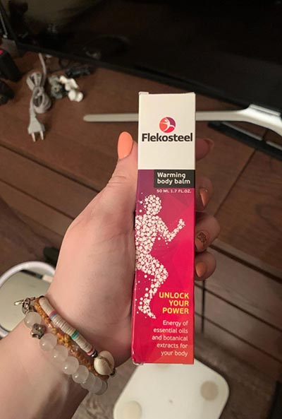
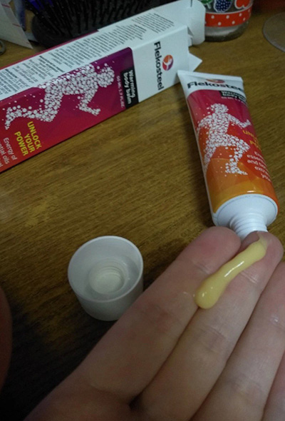

ظننت أنني أصبت بنوبة قلبية، لكنها كانت تنخر العظم.
سأخبرك كيف تخلصت من الأعراض المزعجة، ونسيت المرض، وعدت إلى نمط حياتي الكامل النشط بسرعة.
1,180 المشاهدات

ألم في كتفك وصدرك، صعوبة في التنفس. أول ما تفكر فيه هو قلبك. لا يوجد شيء تفكر فيه - يجب عليك استدعاء سيارة إسعاف. هذا ما فعله زملائي عندما مرضت في العمل.
أظهر تخطيط القلب أن قلبي بخير. أجريت فحصًا كاملاً في المستشفى ووجدت أنني مصاب بداء عظمي غضروفي صدري. لم أتوقع ذلك! أمارس الرياضة، وأذهب إلى اليوجا، وأنام على فراش لتقويم العظام. كل هذا عبثا ...
أعطاني الخبراء قائمة بعلاج معقد باستخدام عوامل حماية الغضروف، ومضادات الذهان، والمهدئات، وأوصوا بأخذ دروس مع مدرب تمارين علاجية. لقد اتبعت جميع التوصيات كمريض مسؤول. لقد علقت أثناء أحد الفصول - لم أستطع إدارة رأسي أو رفع ذراعي. أي حركة تسبب الألم. بعد أن رأى المدرب عذابي، بدأ يسألني عن المشكلة. ولما سمع التشخيص صفع على جبهته:
لماذا لم تقل شيئا أي تمرين ممنوع في حالتك مع تفاقم. تحتاج إلى إزالة متلازمة الألم. يمكن حل هذه المشكلة في غضون أسبوع. بعد ذلك، يمكنك ويجب أن تمارس تمارين للنغمة والصحة.
نظرت إلى المدرب باهتمام وأنا أمسح دموعي.
يعيش الأشخاص المصابون بهذا التشخيص في جميع أنحاء العالم حياة نشطة وكاملة ولا يتذكرون الألم. هل تريدني ان اساعدك؟ صدقوني، الألم سيختفي إلى الأبد، وستكون قادرًا على ممارسة الرياضة دون التعرض لخطر الإصابة.
هذه هي الطريقة التي تعلمت بها عن بلسمَ خاص يسمى . بالطبع، كنت قد عرفت بالفعل عن قوة الشفاء لأوكالبتوس، لكنني لم أكن أؤمن بها حقًا. لكن تبين أن كل شيء بسيط - البلسم فعال للغاية وسهل الاستخدام. يمكنك استخدامه في العمل ولن يلاحظ أحد. شيء مذهل! بالطبع، طلبت من مدربي مساعدتي في طلب ذلك. لقد ساعدني في شراء البلسم بسعر مخفض - دفعت نصف السعر فقط. رخيصة الثمن لصحة جيدة.
تم تسليم البلسم بعد ثلاثة أيام. كانت انطباعاتي الأولى لطيفة للغاية - فهي ذات قوام خفيف الوزن ورائحة الأوكالبتوس اللطيفة. الشيء الرئيسي هو أن تركيبته تحتوي فقط على مكونات طبيعية مثل زيت الأوكالبتوس وزيوت القرفة وخلاصة الزنجبيل. لا توجد مواد كيميائية أو مكونات تركيبية.
قررت أن أجرب البلسم على الفور. بناءً على توصية مدربي، قمت بتطبيقه على رقبتي، مباشرة على المكان الذي كان يؤلمني. إنه لأمر مدهش أن أشعر بالدفء اللطيف في غضون بضع دقائق فقط، بينما تلاشى التوتر واسترخيت العضلات. لأول مرة منذ فترة، تمكنت من النوم طوال الليل دون أن أستيقظ!
قمت بتطبيق بلسمكل صباح وكل مساء، ذهب الألم وشعرت بطفرة في الطاقة! بعد أسبوع من استخدامه بانتظام، أصبحت جميع الأعراض غير السارة من الماضي.
لقد كنت أستخدم هذا البلسم منذ أكثر من شهرين. خلال هذا الوقت، نسيت الداء العظمي الغضروفي والألم، وبدأت في الذهاب إلى صالة الألعاب الرياضية مرة أخرى، وحتى اشتركت في دروس الرقص. الآن، أستطيع أن أقول ذلك على وجه اليقين هو حل رائع ومفتاح الصحة الجيدة. بالمناسبة، يمكنك استخدامه ليس فقط للتعامل مع الإصابات ولكن أيضًا قبل التمرين - فهو يضمن حماية ودعم كبيرين لعضلات مفاصلك عند التمرين. حتى الرياضيين يستخدمونه: أخبرني مدربي عنه سراً، لكن يجب أن تصمت حيال ذلك!
إذا كنت تعاني من تنخر العظم أو أي مرض مزمن آخر، فاستخدم هذه النصيحة - اطلب . ستودع التعب وسوء المزاج والألم وستستمتع بالخفة والمزاج الرائع والشعور بالحيوية. هذا ما ستشعر به في كل مرة تستخدم فيها البلسم. إذا كنت مهتمًا، فإليك رابطًا يؤدي إلى موقع الويب الخاص بالشركة المصنعة. في الوقت الحالي، يقدمون خصمًا بنسبة 50% - اسرع في شراء المنتج لتحسين صحة جميع أفراد عائلتك.
من كان يظن أن مثل هذا الحل البسيط يمكن أن يساعدك في التخلص من مثل هذه المشكلة الخطيرة؟ في البداية، اعتقدت أنه كان مجرد مرهم واحد عديم الفائدة، لكنني غيرت رأيي بسرعة كبيرة. يقوم البلسم بعمله بشكل جيد للغاية، بل إنه أفضل من التدليك الاحترافي. بعد استخدامه، أشعر بدفء لطيف في جسدي ولا أشعر بأي ألم على الإطلاق. أنا أحب ذلك تماما!
رد مشاركةلقد بدأت في استخدام البلسم مؤخرًا، لكن انطباعاتي إيجابية فقط حتى الآن. في الماضي، كنت أستخدم منتجًا من علامة تجارية أخرى، كان هراءًا مطلقًا، ولم يكن له أي تأثير، وكانت رائحته كريهة للغاية لدرجة أنها كانت تشم رائحة الملابس وأغطية السرير، لذلك اضطررت للتخلص منه بعد استخدامه لمجرد إسبوعين. لكني الآن أستخدم ، وأنا سعيد تمامًا بها.
رد مشاركةأعاني من آلام في الرقبة منذ عدة سنوات. التدليك لا يساعد. سأحاول ، هذا هو أملي الأخير.
رد مشاركةطلبت لجدي. يعاني من التهاب مفصل الركبة، وبالكاد يستطيع التحرك في أرجاء المنزل. ولكن بعد استخدامه لمدة أسبوعين، يمكنه الركض مع أحفاده! كما تعلم، لقد فكرنا في الجراحة ... شكرًا لك على المعجزة!
رد مشاركةسأحاول بالتأكيد، لدي آلام أسفل الظهر المستمرة، ولا يمكنني تحملها بعد الآن.
رد مشاركةكشخص يعرف الكثير عن إعادة التأهيل بشكل مباشر، سأقول هذا: أفضل من أي علاج طبيعي. بغض النظر عن مشاكلك - المفاصل والأوتار والعضلات، ستساعدك على التغلب عليها وتركها في الماضي. لا تؤجله - يجب أن يكون الاهتمام بصحتك في الوقت المناسب.
رد مشاركةكمتقاعد، أنا سعيد بشكل خاص بوجود هذا الشيء في المنزل. تشنجات الظهر، آلام الركبة، خلع في الرقبة، توتر الأربطة ... البلسم عالمي حقًا، يمكنك استخدامه لتدليك أي جزء من جسمك في أي وقت. ولن تضطر إلى زيارة الأطباء، فهم فقط يأخذون أموالك منك ويصفون لك مواد كيميائية.
رد مشاركةهذه الاشياء مدهشة. أشعر دائمًا بالحيوية بعد استخدامه. يكفي وضعه على المنطقة المؤلمة ويزول الألم في غضون دقائق معدودة! يستخدمه أقاربي الآن بنشاط أيضًا. حان الوقت لتجديد إمداد ! :)
رد مشاركةنصحني مدربي الشخصي باستخدامه قال إن هذا هو أفضل شيء للاسترخاء بعد التدريبات. وأنا أتفق معه تمامًا. ذهب توتر العضلات، لقد نسيت الألم ووجع العضلات منذ فترة طويلة. جسدي في حالة جيدة، وحالتي البدنية رائعة.
رد مشاركةأود أن أقول إنني بصحة جيدة تقريبًا إذا لم أتعرض لإصابة قديمة بسبب السقوط السيئ (الذراع المكسور). كوعي يؤلمني كثيرا. ليس لدي وقت للتدليك والصالات الرياضية، لهذا السبب هو اكتشاف عظيم بالنسبة لي. أطبق هذا البلسم في كل مرة أشعر فيها ببعض الانزعاج ثم أشعر بالرضا. لقد نسيت إصابتي القديمة ويمكنني حتى الضغط على مفصلي التالف! كما تعلم، من الرائع أن تشعر أنني أستطيع أن أعيش حياة كاملة مرة أخرى!
رد مشاركةسمعت عن بفضل دروس اليوجا - أوصى المدرب باستخدامها قبل التمرين وعند الإصابة. تبين أن هذه التوصية مفيدة للغاية - خلال إحدى الجلسات التدريبية، تعرضت لإصابة في الكتف. أصبحتمنقذي! هذا المنتج يستحق كل بنس. إنه لأمر لا يصدق أن مثل هذا الشيء البسيط مفيد للغاية.
رد مشاركةبعد الفحص، نصحني أحد المتخصصين بالخضوع لدورة من التدليك المؤلم. حصلت على بلسمستين، بكيت من الألم بعد ذلك وتخلت عنه. بالطبع، بدأت في البحث عن بديل. ووجدت بلسم الذي حل مشكلتي في غضون أسبوع واحد فقط. الآن، احتفظ بها في مجموعة الإسعافات الأولية الخاصة بي وأستخدمها في كل مرة أشعر فيها بعدم الراحة.
رد مشاركةهي معجزة حقيقية. اختفى آلام الظهر. إذا كان لديك وظيفة مستقرة أو تقوم بعمل بدني، فإن هذا البلسم ضروري لمجموعة أدوات الإسعافات الأولية في منزلك.
رد مشاركةشيء مثير للاهتمام، أريد حقًا تجربته
رد مشاركةلقد طلبت للتو هذا البلسم، وهناك بالفعل خصم بنسبة 50%، شكرًا لك على هذه المدخرات. على الرغم من أنه إذا كان كل ما يقوله الناس عن ذلك صحيحًا، فأنا لا أمانع في دفع الثمن الكامل له.
رد مشاركة